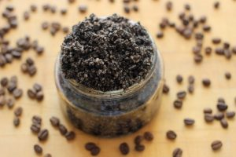

- Keep Slugs Away
 Unlike worms, slugs, snails, and other bugs don’t like the acidity of coffee and won’t cross the ground if it’s sprinkled with java.
Unlike worms, slugs, snails, and other bugs don’t like the acidity of coffee and won’t cross the ground if it’s sprinkled with java.
2. Keep Your Cat In Or Other Cats Out Of Your Yard

Tired of waiting hours for your cat to return; or your neighbors cats traipsing through your flowers? Just sprinkle some coffee grounds and orange peel where you don’t want them to walk.
3. Make A Roach Trap

Fill a can or jar with an inch or two of moistened coffee grounds, then line the container’s neck with extra-sticky double-sided tape. The scent will draw cockroaches into the trap.
4. Unclog Your Drain

Pour used coffee grounds down the sink or bathtub drain, followed by 3 drops of dish soap and a pot of boiling water. This will clean and clear the drain of clogs and built up grease.
5. No Bake Energy Bites

Stir your oatmeal, flaxseed, and coffee granules together in a medium bowl until thoroughly mixed, then add your almond butter(or peanut butter), honey, and vanilla. Once well combined fold in your chocolate chips and cranberries. Stir well! Let chill in the refrigerator for 20 minutes. Once chilled, roll into balls of whatever size you would like, I usually make 10-12 balls. Store in an airtight container and keep in the fridge for up to 1 week…if they last that long!
6. Make A Flea Bath

Add some coffee grounds to your dog’s shampoo to create a natural flea repellant.
7. Strip Build-up From Your Hair

The abrasive texture of coffee grounds will help strip oils and buildup from your hair. Pile them on in the shower or, for a much less messy strategy, just add some grounds to your shampoo or conditioner. Caution: best for brunettes as coffee can also darken hair.
8. Make A Luxurious Salt Scrub

In a large bowl, add coarse sea salt and coffee grounds and stir; place oil and essential oils into bowl and stir. Store in air tight jar and use for those days when you need to need a good scrubbing.
9. Make A Mocha Frappuccino Mask

- 2 Tbsp freshly ground coffee
- 2 Tbsp. cocoa powder
- 3 Tbsp. milk (whole), heavy cream, or yogurt
- 1 Tbsp. honey
Mix all the ingredients together well. Apply to a sleepy morning face. Allow the mask to dry for 15-20 minutes. Wash off in the shower, scrubbing VERY lightly over the skin while rinsing.
10. Salt Your Sidewalk or Driveway

Coffee grounds make great gravel to help keep roads and sidewalks from being slippery, and the acid helps melt the ice quicker.